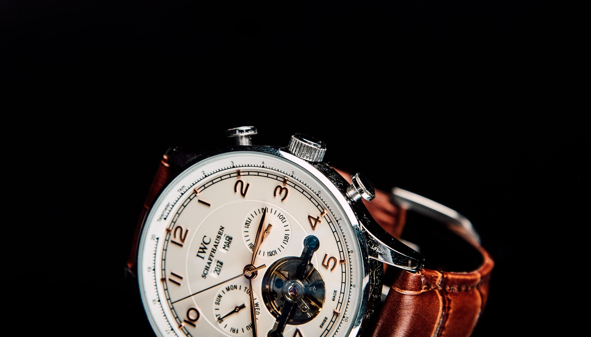

01 / Everyday Watches
Make time.
Wear it well.
The best everyday watch feels natural, reads clearly, and quietly becomes part of your routine.

The journal
Made for daily life
A watch is one of those small accessories that can change the feel of an entire outfit. I like that it can be useful and personal at the same time, whether I am heading to class or going out with friends.
An everyday watch should be easy to read and comfortable to wear. Simple hands, clear hour markers, and a strap that fits well matter more to me than a dial packed with extra features. Checking the time should only take a quick glance.
My favorite thing about wearing a watch is being able to check the time without picking up my phone. It is a tiny habit, but it helps me avoid turning a quick time check into ten minutes of scrolling.